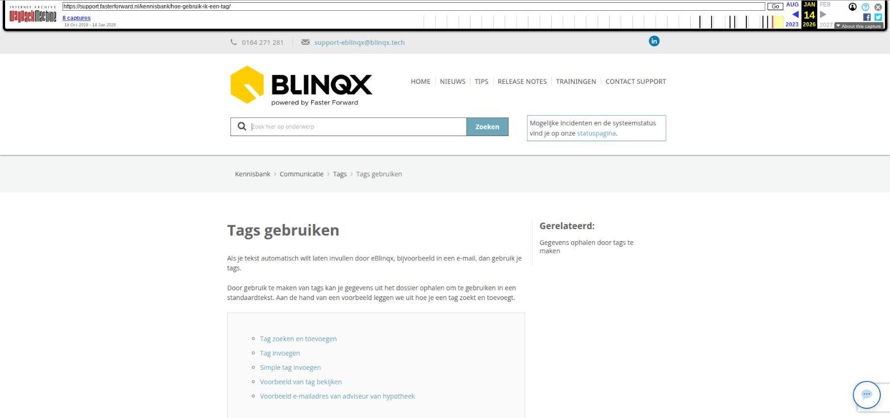

Tags gebruiken

Tekstinhoud
Tags gebruiken
Als je tekst automatisch wilt laten invullen door eBlinqx, bijvoorbeeld in een e-mail, dan gebruik je tags.
Door gebruik te maken van tags kan je gegevens uit het dossier ophalen om te gebruiken in een standaardtekst. Aan de hand van een voorbeeld leggen we uit hoe je een tag zoekt en toevoegt.
Tag zoeken en toevoegen
Tag invoegen
Simple tag invoegen
Voorbeeld van tag bekijken
Voorbeeld e-mailadres van adviseur van hypotheek
Tag zoeken en toevoegen
In dit voorbeeld gaan we een brief aanmaken en de 'hoofdsom' van een hypotheek invoegen.
Ga naar een hypotheek in een klantdossier.
Klik op 'Brief aanmaken'
Klik boven het tekst van de brief op 'InsertTags'
In de module zie je de termen Velden en Tag. Deze velden op de eerste pagina van de tagmodule zijn simple tags. Meer hierover vind je hieronder.
De dik gedrukte begrippen onder velden geven aan dat je hier op kunt klikken om een niveau dieper te gaan. Er liggen nog verwijzingen onder.
Omdat we een veld zoeken wat in een offerte staat, klik je hier eerst op het woord 'offerte' (de term in eBlinqx voor alle soorten producten).
Wanneer je hierop klikt, bent je weer één niveau dieper. Er staan weer velden (dieper niveau) en tags. De tags hebben geen dieper niveau. Deze staan wederom onderaan (scrollen).
Bij een aantal van deze tags zie je ook een waarde staan. Deze waarden komen uit de velden van de offerte, zodat je direct het resultaat van de tag kunt zien.
Tag invoegen
Klik op de tag om hem toe te voegen in je tekst. De tag wordt vervolgens ingevoerd in het tekstveld in de brief. Je kunt deze tag nu selecteren, kopiëren en in jouw standaardtekst plaatsen op de plek waar je deze wilt hebben.
Simple tag invoegen
Je kunt ook simple tags invoegen (alleen mogelijk voor beheerders). Hierbij wordt standaard informatie automatisch toegevoegd.
Een voorbeeld van zo'n simple tag is [=]. Voeg je deze toe aan bijvoorbeeld de algemene dossiernotities dan zie je wie en wanneer de notitie is aangemaakt.
De beheerder kan deze simple tag aanmaken in Beheer – Tags. Maak hier een tag aan en zet in het veld code de tekst die hier rechts staat. Bij naam zet je [=]. Voeg vervolgens [=] in in de dossiernotitie. Zo zie je altijd wie en wanneer de notitie heeft aangemaakt.
[algemeen->vandaag->dagnummer|voorloopnul]-[algemeen->vandaag->maandnummer|voorloopnul]-[algemeen->vandaag->jaar] ([algemeen->vandaag->uur]:[algemeen->vandaag->minuut|voorloopnul]u) : [algemeen->persoon->voornaam] [if{algemeen->persoon->tussenvoegsel}!=][algemeen->persoon->tussenvoegsel] [/if][algemeen->persoon->achternaam]:
Voorbeeld van tag bekijken
Om te controleren of je de juiste tag hebt ingevuld en welke informatie er wordt opgehaald, gebruik je de 'Previewtags' knop. Zodra je hierop klikt, zie je hoe de ontvanger jouw e-mail of brief ziet.
Voorbeeld e-mailadres van adviseur van hypotheek
Wanneer je bijvoorbeeld het e-mailadres van de adviseur van de hypotheek wilt opnemen zijn de volgende stappen in het tagsysteem nodig: offerte->adviseur->emailadressen->emailadres->adres. Dit is dan de tag tussen blokhaken [offerte->adviseur->emailadressen->emailadres->adres].
Zelf een tag maken op basis van onze standaard tags? Klik hier voor meer informatie
Laatste update: 15 oktober 2025
Was deze informatie nuttig?
Ja Nee